Bab 1
Deskripsi Sistem dan Matriks Hak Akses
Sistem Informasi Kepegawaian (SIMPEG) Dinas Pangan dan Pertanian Kabupaten Sidoarjo merupakan aplikasi web terpadu untuk pencatatan, pemantauan status, dan pelaporan aparatur di lingkungan Kantor Induk dan 5 Unit Pelaksana Teknis Daerah (UPTD). Sistem mencakup PNS, PPPK, PPPK Paruh Waktu, Tenaga Swakelola, dan Tenaga Outsourcing.
| Modul / Menu Layanan |
Pengguna Publik |
Administrator Kepegawaian |
| Dashboard Statistik & Komposisi Aparatur |
Tersedia |
Tersedia |
| Direktori Pegawai & Pencarian NIP |
Tersedia |
Tersedia |
| Unduh PDF & Cetak Laporan Pegawai |
Tersedia |
Tersedia |
| Bagan Struktur Organisasi Dinas |
Tersedia |
Tersedia |
| Kelola Pegawai (Tambah, Edit, Arsip/Soft Delete) |
Tidak Tersedia |
Hak Akses Penuh |
| Kelola Formasi Jabatan (Plotting/Anjab) |
Tidak Tersedia |
Hak Akses Penuh |
| Pengaturan Master Data Kedinasan |
Tidak Tersedia |
Hak Akses Penuh |
| Rekapitulasi Batas Usia Pensiun (BUP) |
Tidak Tersedia |
Hak Akses Penuh |
| Usulan Kenaikan Pangkat (KP) |
Tidak Tersedia |
Hak Akses Penuh |
| Audit Log Aktivitas & Ekspor Excel (.xlsx) |
Tidak Tersedia |
Hak Akses Penuh |
Bab 2
Dashboard Statistik dan Komposisi Aparatur
Halaman utama publik menampilkan rangkuman data kepegawaian yang diperbarui secara langsung dari basis data. Rincian kategori aparatur ditampilkan per kelompok persentase dan diagram batang persebaran unit kerja:
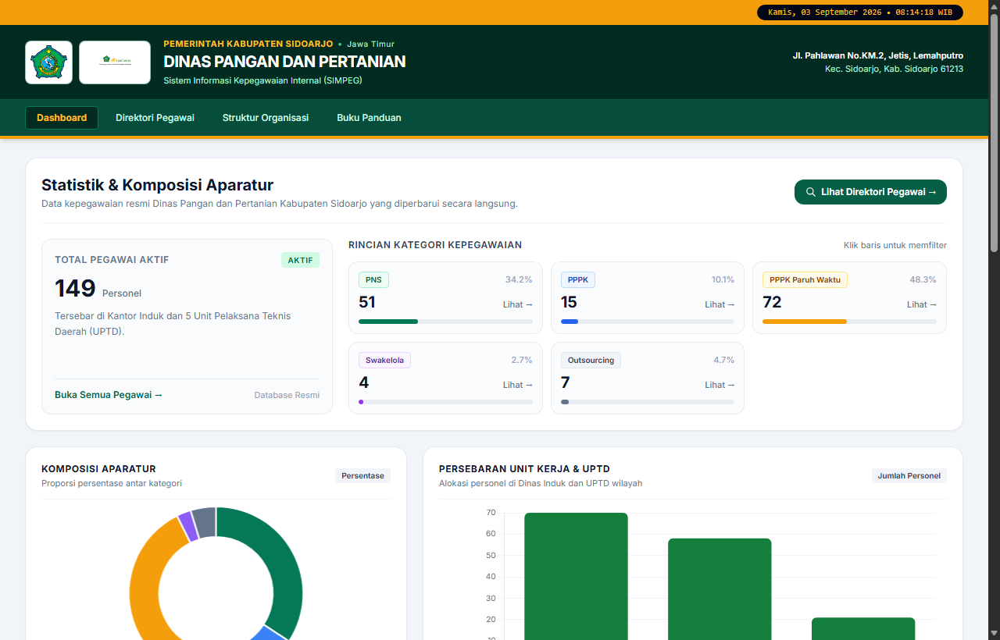
Gambar 2.1: Tampilan Dashboard Publik menampilkan total 149 personel aktif, kartu kategori (PNS 51, PPPK 15, PPPK Paruh Waktu 72, Swakelola 4, Outsourcing 7), diagram komposisi donat, dan diagram batang sebaran unit kerja.
Elemen Antarmuka pada Dashboard Publik:
- Total Pegawai Aktif: Menunjukkan angka agregat pegawai yang tercatat dalam status aktif.
- Rincian Kategori: Kartu persentase per kategori pegawai (klik tautan Lihat → untuk langsung memfilter ke direktori pegawai).
- Grafik Persebaran Unit Kerja & UPTD: Grafik batang pembagian penempatan pegawai di Kantor Induk dan UPTD wilayah.
- Tombol Lihat Direktori Pegawai: Tautan navigasi cepat menuju tabel data pegawai lengkap.
Bab 3
Direktori Pegawai dan Pencetakan Laporan
Menu Direktori Pegawai menyajikan daftar tabel aparatur lengkap dengan fasilitas penyaringan multifaktor dan ekspor cetak:
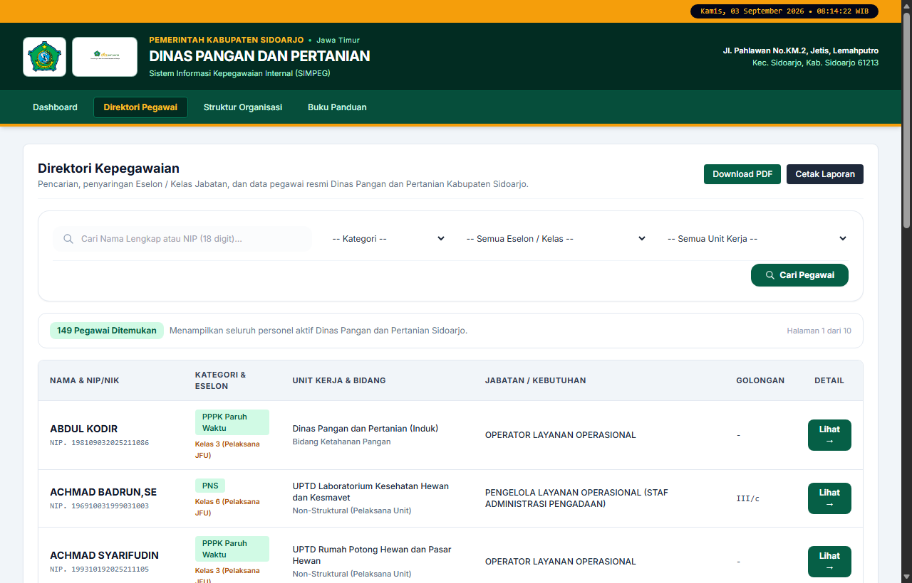
Gambar 3.1: Halaman Direktori Kepegawaian publik dilengkapi filter Kategori, Eselon/Kelas, Unit Kerja, kotak pencarian Nama/NIP, tombol Download PDF, dan Cetak Laporan.
Prosedur Penggunaan Direktori:
1
Pencarian: Ketikkan nama pegawai atau 18 digit NIP pada kotak pencarian lalu klik Cari Pegawai.
2
Penyaringan: Pilih dropdown Kategori, Eselon / Kelas, atau Unit Kerja untuk mempersempit daftar.
3
Ekspor PDF / Cetak: Klik Download PDF untuk mengunduh dokumen laporan A4 Lanskap resmi, atau Cetak Laporan untuk mencetak langsung melalui dialog browser.
Bab 4
Struktur Organisasi Dinas
Menyajikan visualisasi hierarki kepemimpinan dinas sesuai Lampiran Peraturan Bupati Sidoarjo Nomor 29 Tahun 2022 tentang Kedudukan, Susunan Organisasi, Tugas dan Fungsi, serta Tata Kerja Dinas Pangan dan Pertanian Kabupaten Sidoarjo:
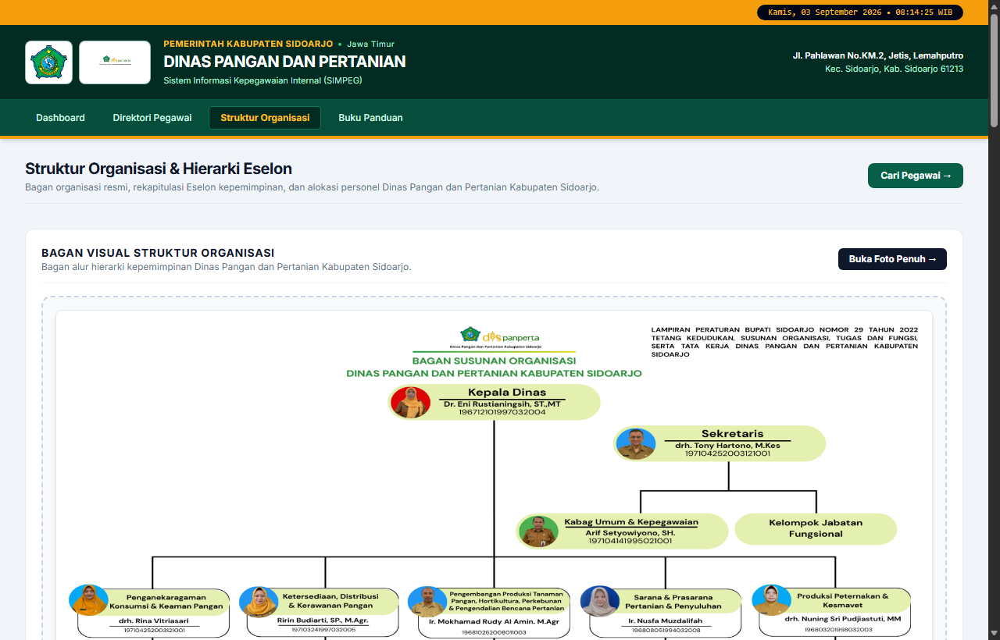
Gambar 4.1: Bagan Susunan Organisasi menampilkan alur hierarki dari Kepala Dinas, Sekretaris, Kepala Bidang, hingga UPTD.
Bab 5
Akses Masuk Login Administrator
Akses panel administrasi kepegawaian membutuhkan otentikasi akun operator Subbag Umum & Kepegawaian melalui halaman login:
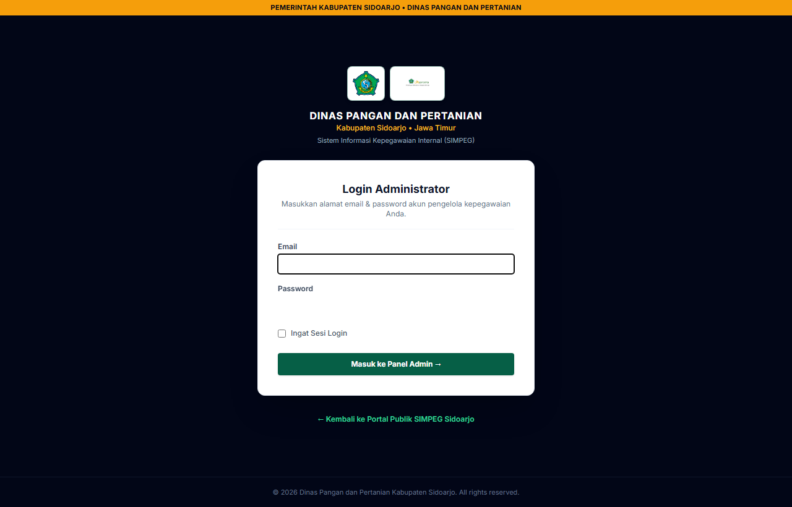
Gambar 5.1: Antarmuka otentikasi akun admin pengelola kepegawaian Dispanperta Sidoarjo.
Instruksi Masuk:
- Masukkan alamat email kedinasan terdaftar pada kolom Email.
- Masukkan kata sandi pengelola pada kolom Password.
- Centang opsi Ingat Sesi Login jika menggunakan komputer kerja kantor dinas.
- Klik Masuk ke Panel Admin →.
Bab 6
Panel Dashboard Pengelolaan Admin
Setelah berhasil masuk, administrator diarahkan ke panel kendali utama yang dilengkapi sidebar navigasi terpadu:
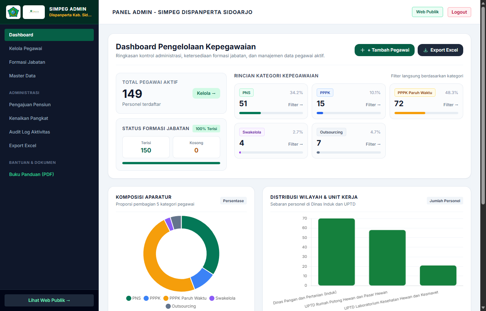
Gambar 6.1: Dashboard Pengelolaan Kepegawaian menyajikan tombol tindakan cepat (+ Tambah Pegawai, Export Excel), metrik status formasi jabatan terisi vs kosong, serta pemantauan kategori aktif.
Struktur Navigasi Sidebar Administrator:
- Dashboard: Ringkasan statistik dan grafik kendali utama.
- Kelola Pegawai: Manajemen pendaftaran, edit, arsip/soft delete, dan kontak.
- Formasi Jabatan: Plotting formasi, kelas jabatan, dan kuota kebutuhan.
- Master Data: Pengaturan tabel referensi Unit Kerja, Bidang, Kategori, Status.
- Pengajuan Pensiun: Monitoring Batas Usia Pensiun (BUP) dan proyeksi purna tugas.
- Kenaikan Pangkat: Pengelolaan usulan KP berkala periode April/Oktober.
- Audit Log Aktivitas: Rekaman jejak mutasi data oleh akun admin.
- Export Excel: Pengunduhan basis data ke format spreadsheet (.xlsx).
Bab 7
Pengelolaan Data Pegawai dan Perekaman Baru
Modul Kelola Pegawai menyediakan kendali penuh atas data aparatur, termasuk tautan kontak langsung WhatsApp dan Email:
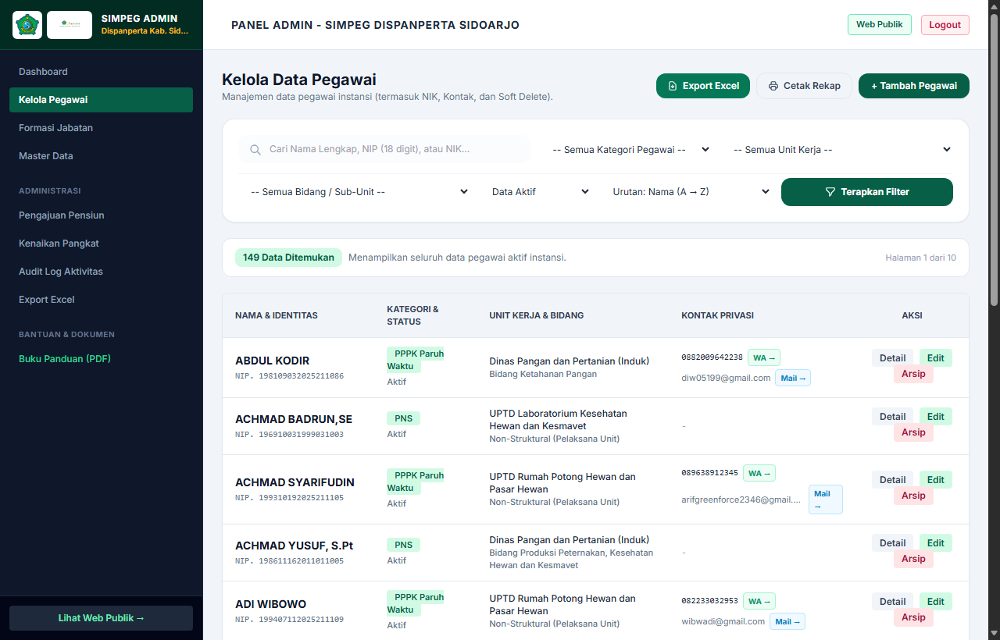
Gambar 7.1: Antarmuka tabel kelola data pegawai pada panel admin dilengkapi filter status data, pengurutan, tombol Export Excel, Cetak Rekap, dan aksi (Detail, Edit, Arsip).
Formulir Tambah Pegawai Baru
Untuk merekam pegawai baru, klik tombol + Tambah Pegawai pada pojok kanan atas tabel:
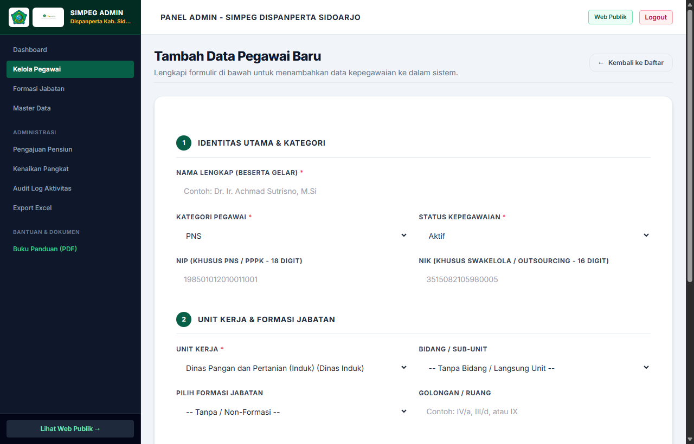
Gambar 7.2: Formulir pendaftaran terstruktur dalam dua tahap: (1) Identitas Utama & Kategori, serta (2) Unit Kerja & Formasi Jabatan.
Kebijakan Pengarsipan Data (Soft Delete & Restore):
Tombol Arsip akan memindahkan pegawai ke status nonaktif tanpa menghapus data secara permanen. Formasi jabatan yang sebelumnya ditempati akan otomatis kembali berstatus Kosong dan siap diisi pegawai lain. Data arsip dapat dipulihkan kembali sewaktu-waktu.
Bab 8
Pengelolaan Formasi Jabatan dan Anjab
Memetakan seluruh formasi jabatan, penanggung jawab definitif, serta kelas jabatan untuk keperluan Analisis Jabatan dan Analisis Beban Kerja (Anjab/ABK):
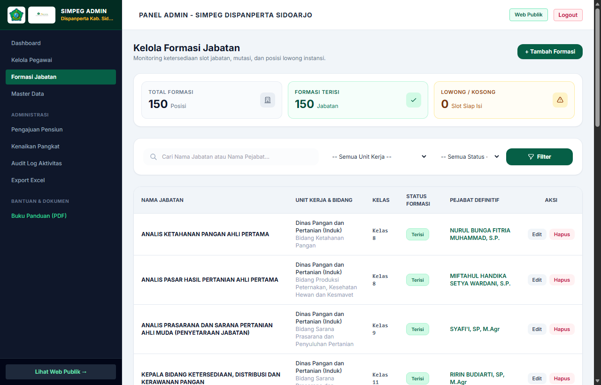
Gambar 8.1: Daftar Formasi Jabatan menampilkan kartu status (Total Formasi, Terisi, Lowong/Kosong), filter unit kerja dan status, serta tabel pemetaan pejabat definitif.
Ketentuan Penambahan Formasi:
Klik + Tambah Formasi untuk menetapkan formasi baru. Tentukan Nama Jabatan, Unit Kerja, Bidang, dan Kelas Jabatan (Kelas 1 s/d 18). Pegawai baru dapat langsung di-plotting ke formasi bersangkutan.
Bab 9
Pengaturan Master Data Kedinasan
Master Data memungkinkan penyesuaian parameter dinas tanpa perlu melakukan perombakan skema database atau source code:
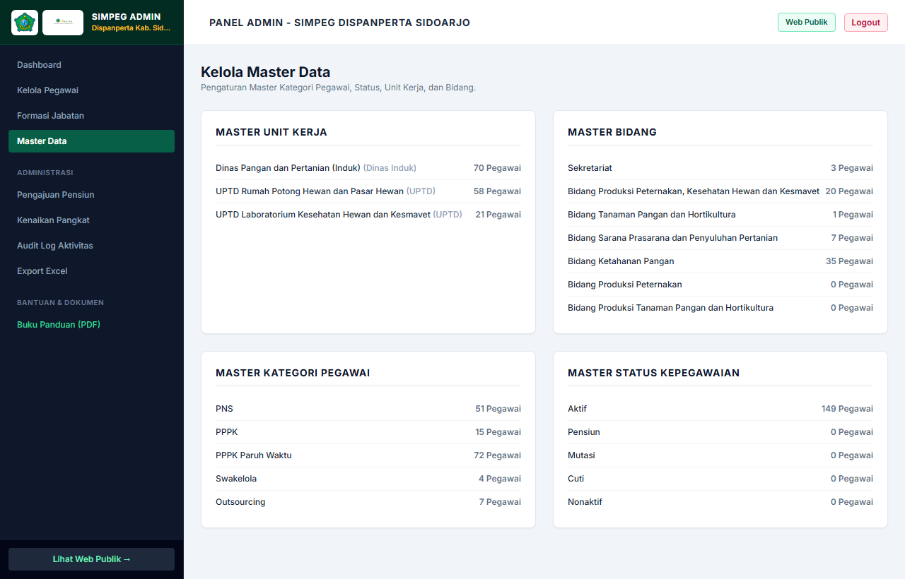
Gambar 9.1: Panel Master Data menampilkan 4 komponen kendali: Master Unit Kerja, Master Bidang, Master Kategori Pegawai, dan Master Status Kepegawaian beserta jumlah pegawai terikat.
Bab 10
Administrasi Batas Usia Pensiun (BUP)
Sistem menghitung tanggal pensiun secara otomatis berdasarkan tanggal lahir NIP pegawai (58 tahun untuk Pelaksana/Fungsional Pertama, 60 tahun untuk Pejabat Pimpinan Tinggi dan Fungsional Madya):
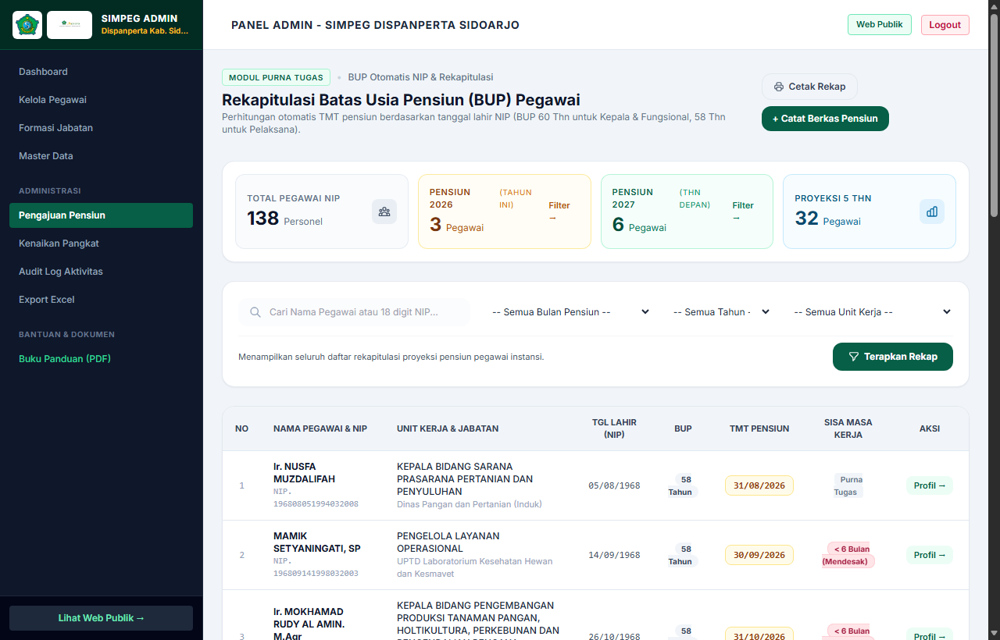
Gambar 10.1: Panel Rekapitulasi BUP menyajikan ringkasan proyeksi pensiun tahun berjalan, tahun depan, dan proyeksi 5 tahun, dilengkapi indikator sisa masa kerja serta tombol Cetak Rekap.
Fasilitas Pencetakan Laporan Pensiun:
Klik tombol Cetak Rekap untuk menghasilkan lembar usulan nominatif BUP bagi Badan Kepegawaian Daerah (BKD), yang telah memuat tanggal lahir resmi, TMT pensiun terhitung, dan kolom tanda tangan pengesahan pimpinan.
Bab 11
Usulan Kenaikan Pangkat (KP) dan Validasi
Modul ini mengelola berkas nominatif usulan kenaikan pangkat berkala aparatur, terintegrasi dengan validasi batas masa pensiun:
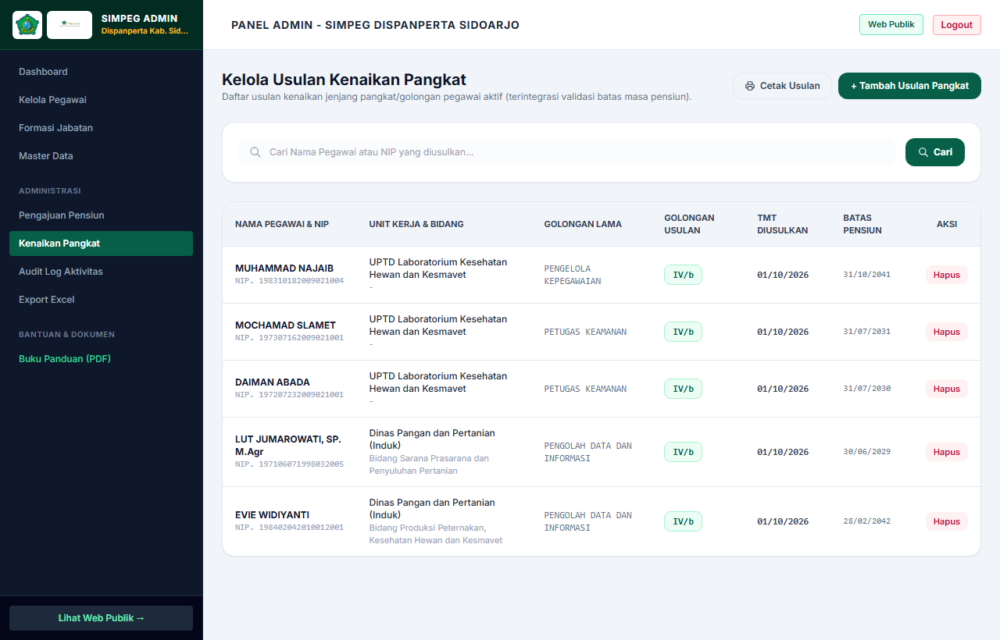
Gambar 11.1: Tabel daftar usulan kenaikan pangkat dengan informasi golongan lama, golongan usulan, TMT diusulkan, batas pensiun, dan tombol Cetak Usulan.
Sistem Validasi Otomatis:
Sistem secara otomatis memeriksa kelayakan aparatur yang didaftarkan. Pengajuan usulan kenaikan pangkat akan ditolak secara otomatis apabila tanggal TMT usulan melampaui tanggal Batas Usia Pensiun yang bersangkutan.
Bab 12
Audit Log Aktivitas dan Ekspor Excel
Seluruh aktivitas perubahan data tercatat dalam audit log untuk memenuhi prinsip akuntabilitas dan tata kelola instansi pemerintah:
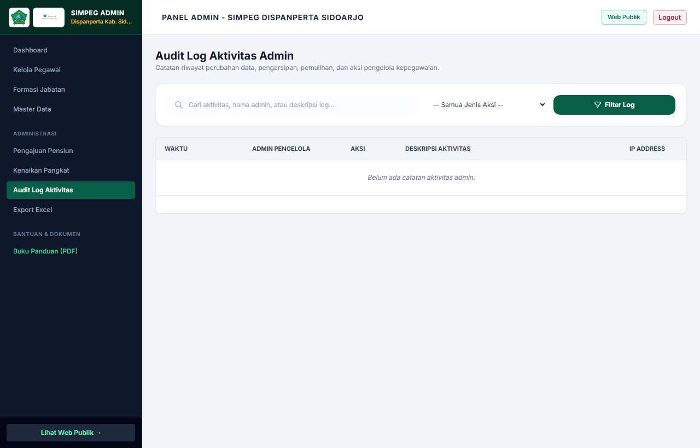
Gambar 12.1: Log audit aktivitas mencatat waktu, identitas akun admin pengelola, jenis aksi, deskripsi aktivitas, dan alamat IP Address pengakses.
Ekspor Data ke Microsoft Excel:
Pada menu Export Excel di sidebar atau tombol Export Excel di daftar pegawai, sistem akan menghasilkan file berekstensi .xlsx secara langsung melalui pustaka PhpSpreadsheet. File ini memuat data lengkap seluruh kolom aparatur yang siap digunakan untuk sinkronisasi dengan BKD Sidoarjo.